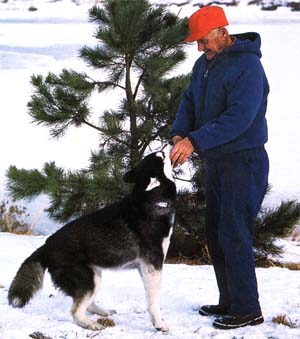

Responsible pet ownership earns great rewards.
THE MOMENT YOU TAKE A PET INTO your home, you become responsible for its needs. Most pet owners do a decent job of providing the essentials-food and shelter, and medical care when their animals are sick or injured. But all too often, other responsibilities are overlooked.
Surveys show that a majority of dog owners report behavior problems in their pets and that fully 40% of all dog owners are dissatisfied with the way their canine chums behave.
In many cases, that dissatisfaction is the result of unrealistic expectations from the outset. I tell my clients that when they opt to have a dog around the house, they've essentially decided to take in the equivalent of a permanent two-year-old child terror. I advise them to take a good, hard look at a "normal" two-year-olds personality and realize that most dogs will stay at that intense level of erratic, get-into-trouble behavior and will retain the joyous attitude of "I think I'll do something stupid today because it's so much fun," for the better part of their lives. Most dogs require just as much time, patience, and training as a toddler.
Likewise, it's important to realize that most of what we humans consider proper pet behavior is entirely contrary to an animal's natural urges. No biting allowed. No leaving a mess in the yard or playground for the kids to step in. No barking at all hours (or any hours, for that matter). No chasing the neighbors' cows or cats. And no raiding the neighbors' bird feeders.
Those are a lot of Thou shalt nots. And each addresses the sort of behavior that's disturbing and upsetting to our natural order but virtually instinctive to animals. Nothing is more natural to a critter than squatting wherever and whenever the urge strikes. Like a bear in the woods. Dogs bark for fun, defense, and out of fear or excitement. Likewise for biting. And, certainly, catching birds is to a cat much more natural than eating from a bowl.
In other words, it's no easy task for an animal to become an acceptable member of our human community. But for our sake and theirs, pets absolutely need to become good citizens of the neighborhoods we bring them into. And it's up to us, as responsible pet owners, to work long enough and hard enough-and with utmost patience-to help them. You'll find that dog obedience classes are available in virtually every community and that most public libraries are well stocked with excellent how-to books on training pets.
Every year between 13 and 18 million dogs and cats are euthanized. The vast majority of these ill-fated, unwanted animals are the offspring of domestic pets.
The only solution to this ongoing travesty is for all pet owners to acknowledge, and follow through on, the absolute need to have their animals spayed or neutered. No pet should be brought into this world without a guaranteed home. Don't let your pets-male or female-breed figuring maybe you'll be able to sell the litter or give away the progeny to someone (anyone, please!).
If you're considering getting a pet, don't forget it will be your responsibility to have that animal spayed or neutered.
American pets as a whole are overweight and underexercised. A sound diet and a daily exercise regimen are just as important to your pet's overall well-being as they are to your own. Neither should be neglected.
Also, remember that caring for an animal means spending money. Most people acknowledge the importance of routine medical care for pets-such as an annual physical -but when the time comes many are surprised at the cost.
I tell folks who are thinking about getting a dog that they should count on spending about $100 a year for ordinary veterinary care alone. This does not take into account expenses that might be incurred from serious injuries or ailments, nor does it include the cost of food, a doghouse, or any of the frills, such as hair trims or play toys. Average annual medical fees for a cat may be a little less-but often not much less. I tell people that if $100 a year would put a burden on their budget, they should reconsider having a dog or cat for now, or perhaps think about getting one of the less costly pets, such as a small bird or a hamster.
Other often-overlooked factors vital to an animal's well-being are the amount and kind of space in which the pet will live. A full-ofenthusiasm hunting dog simply does not belong in a small city apartment. Likewise, a highstrung, easily frightened critter can't be expected to live comfortably in a family with two or three energetic, boisterous children. And certainly no dog deserves to be tied to a tree and left alone all day, every day, simply because its owners have to work and don't have time to give their pet some attention.
Animals that are forced to live in environments that don't suit their natures can't be happy-and you can bet that unhappiness will manifest itself in behavior problems.
On the other hand, if you provide an appropriate and loving home, you can expect your pet to be content and eager to please.
The responsibilities that come with owning a pet can be weighty indeed. It takes time to teach a pet how to get along in a humandominated world; it takes time to feed, groom, and provide for the health and social needs of a pet; it takes time to show love for that pet. What's more, bringing a pet into your home reflects a long-term commitment, not just a short-term whim.
But don't forget for an instant that your efforts will be rewarded several times over in love and loyalty and companionship. Don't become too busy living up to your responsibilities as a pet owner to stop and appreciate what you're getting back.
Our pets have to condense a whale of a lot of living into a relatively short span of time. Life and death come within a decade or two (much less for some). You can help make those years fun and fulfilling for you both.
|
 ?ZIG LESZCZYNSKI/ANIMALS ANIMALS Pet care responsibilites include socialization, birth control, exercise and more. |
|
|